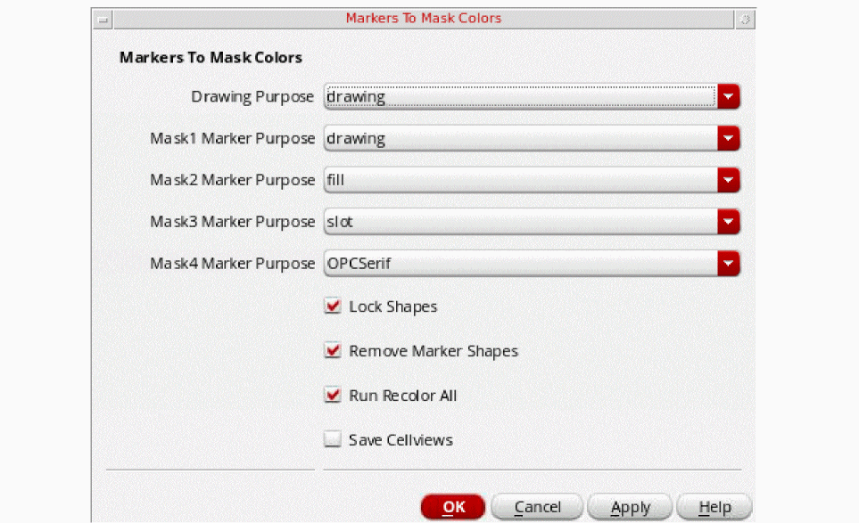

Converting Markers to Mask Colors
Some imported stream files create duplicate shapes to represent coloring, one for the shape and the other for the color marker shape. Before using the color engine, the imported data of this type must be converted using the mptMarkersToMaskColors SKILL function. The Multiple Patterning toolbar also provides a convenient way to perform this conversion.
By default, the Markers to Mask icon is not visible in the Multiple Patterning toolbar. To display the icon, you must set the
enableMarkersToMaskColors environment variable:envSetVal("mpt" "enableMarkersToMaskColors" 'boolean t)
To convert the color markers to mask colors:
-
Click the Markers to Mask icon.
The Markers to Mask Colors form appears.
 - Choose the Drawing Purpose.
- Choose the Mask1 Marker Purpose.
- Choose the Mask2 Marker Purpose.
- Choose the Mask3 Marker Purpose.
-
Choose the Mask4 Marker Purpose.
The purposes apply only to layers with more than two mask colors. - Select Lock Shapes to lock the color state on shapes.
- Select Remove Marker Shapes to remove the marker purpose shapes.
- Select Run Recolor All to recolor all cellviews.
- Select Save Cellviews to automatically save the modified cellviews in the hierarchy.
- Click OK.
Shapes are merged from the drawing purpose and the marker purposes through the hierarchy so that the shapes on the drawing purpose remain with the expected mask color assignment. You can also do the conversion using mptMarkersToMaskColors, described in Virtuoso Layout Suite SKILL Reference.
Return to top